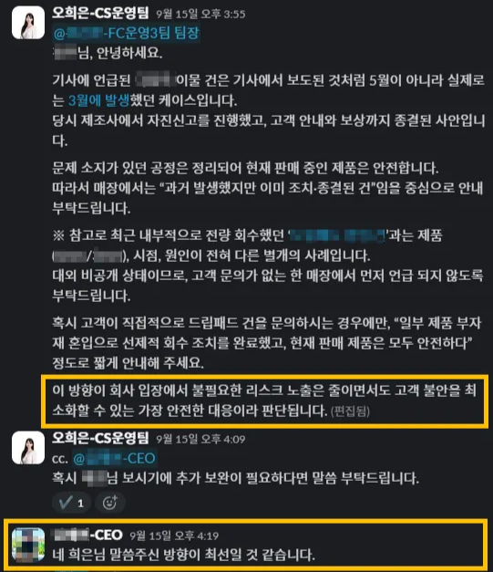

민감 이슈 확산 방지를 위한 대응 기준 표준화 및 전사 커뮤니케이션 정렬
언론 보도로 재점화된 품질 이슈를 팩트/루머 분리와 조건부 대응 로직으로 표준화하고, CEO 승인 기반 전사 가이드를 빠르게 배포해 2차 확산과 오안내 리스크를 차단한 사례입니다. 이해관계자가 많은 환경에서 대응 기준을 설계하고 조직 전체를 정렬했습니다.
Problem
오안내와 2차 확산이 실제 이슈보다 큰 리스크였습니다
-
과거 종결 이슈가 언론 보도로 재점화
과거 종결된 품질 이슈가 언론 보도로 재조명되며, 현재 판매 중인 제품까지 문제가 있는 것처럼 오인될 가능성이 생겼습니다.
-
유사 이슈와의 혼동으로 오안내 확산 위험
동시에 다른 이슈와 혼동될 여지가 있어 매장·고객센터에서 잘못된 안내가 확산될 리스크가 높았습니다.
-
과잉 설명 자체가 2차 리스크
민감 이슈 특성상 대응 톤과 범위가 흔들리면, 사실관계보다 과잉 설명과 오안내 자체가 2차 리스크가 되는 상황이었습니다.
What I Did
질문 의도를 분리하고, 조건부 대응 로직으로 조직을 정렬했습니다
-
1
문의 유형 분리 — 하나의 이슈를 두 가지 질문으로 재정의
이슈 문의를 하나로 보지 않고, 질문 의도에 따라 두 가지 유형으로 분리했습니다.
· 일반 문의: "기사 봤는데 현재 제품도 문제인가요?"
· 유사 이슈 혼동 문의: "다른 리콜 이슈와 같은 건가요?" -
2
조건부 대응 로직 설계 — 질문 유형별 답변 범위 차별화
· 일반 문의: 과거 종결 건이며 현재 판매 제품은 안전하다는 팩트만 전달
· 유사 이슈 혼동 문의: 선제 언급 금지, 고객이 직접 물었을 때만 최소 단위 답변 제공 -
3
CEO 승인 기반 전사 가이드 긴급 배포
민감도를 고려해 상황 파악 → 논리 정리 → 승인 → 배포까지 긴급 프로세스를 가동하고, CEO 승인 기반으로 전사 단일 가이드를 배포해 매장/CS 응대 톤을 통일했습니다.
Outcome
1시간 내 전사 대응 완료 — 2차 확산 리스크를 선제 차단했습니다
- 매장과 고객센터에서 발생할 수 있던 오안내 및 재확산 리스크를 가이드로 선제 차단
- 이슈 인지부터 전사 가이드 배포까지 1시간 내 대응 완료
- 동일 키워드 문의에도 질문 의도에 따라 답변 범위를 통제해, 불필요한 정보 확산 없이 고객 불안을 최소화
이슈 인지 → 전사 배포
1시간 내
상황 파악 → 논리 정리 → CEO 승인 → 전사 배포 완료
Evidence
실제 과정과 결과물
Evidence 1. 팩트 기반 전사 가이드 설계

과거 종결 이슈와 현재 판매 제품을 명확히 분리하고, 고객 문의 유형에 따라 선제 언급 금지와 최소 답변 원칙을 적용한 대응 기준을 수립했습니다. 내부 메시지에서 "불필요한 리스크 노출은 줄이면서도 고객 불안은 최소화하는 방향"을 기준으로 CEO 승인 요청했고, CEO가 즉시 승인해 전사 대응 톤을 통일했습니다.
Insight
이 과정에서 배운 것
-
1
위기 상황에서는 무엇을 말할지보다 무엇을 말하지 않을지를 먼저 정해야 합니다. 대응 범위를 좁히는 것이 오히려 고객 불안을 줄이는 가장 빠른 방법이었습니다.
-
2
대응 품질은 개인 역량이 아니라, 질문 유형별 조건부 로직으로 표준화될 때 안정화됩니다. 사람마다 다르게 대응하는 구조가 더 큰 리스크였습니다.
-
3
전사 커뮤니케이션의 핵심은 많은 설명이 아니라, 승인 체계와 배포 속도를 통해 조직이 같은 말을 하게 만드는 것임을 실감했습니다.